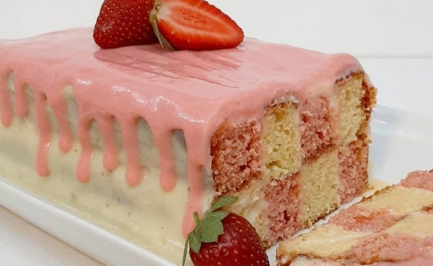
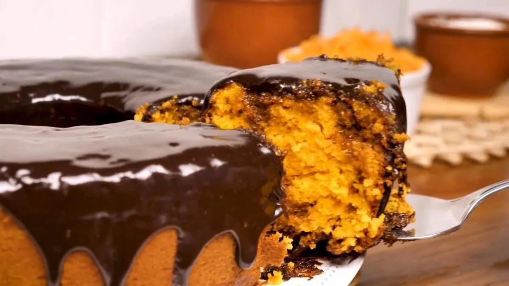

Bolo Xadrez
Ingredientes
- 2 ovos
- 1 xícara de chá de açúcar
- 1/2 xícara de chá de óleo
- 1 xícara de chá de leite
- 1 colher de chá de essência de baunilha
- 2 xícaras de chá de farinha de trigo
- 1 colher de sopa de fermento em pó químico
- 1 colher de sopa de leite em pó – opcional
- 3 colheres de sopa de Nesquik morango

Bolo De Cenoura
Ingredientes
- 3 cenouras médias (250g)
- 4 ovos
- meia xícara (chá) de óleo
- 2 e meia xícaras (chá) de farinha de trigo
- 2 xícaras (chá) de açúcar
- 1 colher (sopa) de fermento em pó
- 1 colher de sopa de fermento em pó químico
- 1 colher de sopa de leite em pó – opcional
- 3 colheres de sopa de Nesquik morango